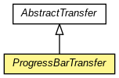

org.waarp.openr66.client
Class ProgressBarTransfer
java.lang.Object
 org.waarp.openr66.client.AbstractTransfer
org.waarp.openr66.client.ProgressBarTransfer
org.waarp.openr66.client.AbstractTransfer
org.waarp.openr66.client.ProgressBarTransfer
- All Implemented Interfaces:
- Runnable
public abstract class ProgressBarTransfer
- extends AbstractTransfer

Through API Transfer from a client with or without database connection,
and enabling access to statistic of the transfer (unblocking transfer)
- Author:
- Frederic Bregier
| Fields inherited from class org.waarp.openr66.client.AbstractTransfer |
block, blocksize, dateFormat, fileinfo, fileInfo, filename, future, id, idt, ismd5, isMD5, localFilename, logger, nolog, remoteHost, rhost, rule, rulename, startTime, ttimestart |
|
Method Summary |
abstract void |
callBack(int currentBlock,
int blocksize)
This function will be called every 100ms (or other fixed value in INTERVALCALLBACK). |
abstract void |
lastCallBack(boolean success,
int currentBlock,
int blocksize)
This function will be called only once when the transfer is over |
void |
run()
Prior to call this method, the pipeline and NetworkTransaction must have been initialized. |
| Methods inherited from class java.lang.Object |
clone, equals, finalize, getClass, hashCode, notify, notifyAll, toString, wait, wait, wait |
networkTransaction
protected final NetworkTransaction networkTransaction
INTERVALCALLBACK
protected long INTERVALCALLBACK
filesize
protected long filesize
ProgressBarTransfer
public ProgressBarTransfer(R66Future future,
String remoteHost,
String filename,
String rulename,
String fileinfo,
boolean isMD5,
int blocksize,
long id,
NetworkTransaction networkTransaction,
long callbackdelay)
callBack
public abstract void callBack(int currentBlock,
int blocksize)
- This function will be called every 100ms (or other fixed value in INTERVALCALLBACK).
Note that final rank is unknown.
- Parameters:
currentBlock - the current block rank (from 0 to n-1)blocksize - blocksize of 1 block
lastCallBack
public abstract void lastCallBack(boolean success,
int currentBlock,
int blocksize)
- This function will be called only once when the transfer is over
- Parameters:
success - True if the transfer is successfulcurrentBlock - blocksize -
run
public void run()
- Prior to call this method, the pipeline and NetworkTransaction must have been initialized.
It is the responsibility of the caller to finish all network resources.
Copyright © 2009-2012 Waarp. All Rights Reserved.